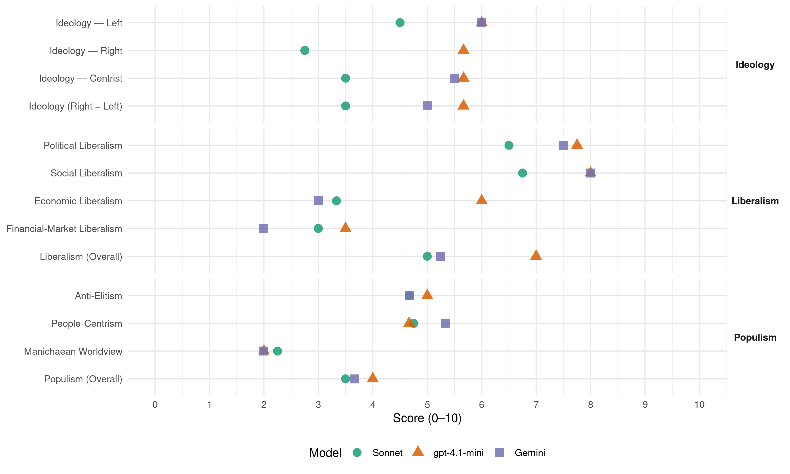

Sp (Norway, 1997)
manifesto_id 12810_199709
Get full text: This site shows derived annotations and short verbatim quotes only. The full manifesto text is © Manifesto Project / WZB — obtain it via manifesto-project.wzb.eu using the manifesto_id above.
Headline scores
| Dimension | Sonnet | gpt-4.1-mini | Gemini |
|---|---|---|---|
| Populism (Overall) | 3.5 | 4.0 | 3.7 |
| Anti-Elitism | 4.7 | 5.0 | 4.7 |
| People-Centrism | 4.8 | 4.7 | 5.3 |
| Manichaean Worldview | 2.2 | 2.0 | 2.0 |
| Ideology (Right − Left) | 3.5 | 5.7 | 5.0 |
| Liberalism (Overall) | 5.0 | 7.0 | 5.2 |
| Political Liberalism | 6.5 | 7.8 | 7.5 |
| Social Liberalism | 6.8 | 8.0 | 8.0 |
| Economic Liberalism | 3.3 | 6.0 | 3.0 |
| Financial-Market Liberalism | 3.0 | 3.5 | 2.0 |
Evidence per dimension
Economic Liberalism
Gemini · score 4.0 · verified · chunk 1
“markedet korrigeres gjennom styring fra folkevalgte organer”
viktige samfunnsinteresser, kan ikke utviklingen overlates til markedskreftene. Dersom viktige politiske målsettinger skal ivaretas, må markedet korrigeres gjennom styring fra folkevalgte organer
Gemini · score 3.0 · verified · chunk 2
“imot innføring av omsettelige kvoter”
Senterpartiet går imot innføring av omsettelige kvoter eller enhetskvoteordninger for kystflåten.
Gemini · score 3.0 · verified · chunk 3
“Senterpartiet går imot å konkurranseutsette pleie”
institusjoner, må de som ønsker det, få enerom. Senterpartiet går imot å konkurranseutsette pleie innen helse og omsorg. SENTERPARTIET VIL
Gemini · score 2.0 · verified · chunk 4
“motsette seg fri konkurranse”
matvaresikkerhet og distriktsutvikling går foran hensynet til fri konkurranse.
gpt-4.1-mini · score 6.0 · verified · chunk 1
“Senterpartiet vil arbeide for et allsidig næringsliv med hovedvekt på små og mellomstore bedrifter”
Senterpartiet ønsker et allsidig næringsliv med hovedvekt på små og mellomstore bedrifter. Full sysselsetting og økt verdiskaping krever samarbeid mellom privat og offentlig sektor.
gpt-4.1-mini · score 7.0 · verified · chunk 2
“Senterpartiet vil føre en økonomisk politikk som har som mål å skape full sysselsetting”
Senterpartiet vil føre en økonomisk politikk som har som mål å skape full sysselsetting. Samspill mellom det offentlige og det private er viktig for å sikre nyskaping og økt sysselsetting, og for å sikre et best mulig tjenestetilbud i alle deler av landet.
gpt-4.1-mini · score 7.0 · verified · chunk 3
“Boligsamvirket må gis gode vilkår, blant annet for å sikre en sosial boligpolitikk.”
Det er viktig å sikre den enkeltes mulighet til å eie sin egen bolig, enten alene eller i samvirke med andre. Det må legges til rette for økt egeninnsats ved boligbygging. Boligsamvirket må gis gode vilkår, blant annet for å sikre en sosial boligpolitikk. Den offentlige boligpolitikken må i første rekke ta sikte på å gjøre det enklere for ungdom og folk i etableringsfasen å skaffe seg bolig.
gpt-4.1-mini · score 4.0 · verified · chunk 4
“Norge bør vise til betydningen av å beskytte eierskap og industrielle interesser”
Senterpartiet mener Norge i Verdensbanken bør argumentere for en utviklingsmodell som tar utgangspunkt i det enkelte lands ønsker og behov. Ut i fra egne erfaringer bør Norge vise til muligheten for en aktiv offentlig sektor og en sterk fordelingspolitikk innebygd i det økonomisk-politiske systemet. Norge bør også kunne vise til betydningen av å beskytte eierskap og industrielle interesser i en oppbyggingsfase av økonomien.
Sonnet · score 4.0 · mixed · chunk 1
“produksjonssektorer fortsatt kan skjermes mot utenlandsk konkurranse”
at produksjonssektorer fortsatt kan skjermes mot utenlandsk konkurranse, i den grad vi finner dette ønskelig. Dette gjelder områder som jordbruk, bygg og anlegg, transport og oljevirksomhet.
Sonnet · score 4.0 · verified · chunk 2
“markedsorientert produksjon som kan fylle kundenes behov”
En markedsorientert produksjon som kan fylle kundenes behov utover en standardisert blokkproduksjon, er derfor nødvendig.
Sonnet · score 3.0 · verified · chunk 3
“går imot å konkurranseutsette pleie”
Senterpartiet går imot å konkurranseutsette pleie innen helse og omsorg.
Sonnet · score 3.0 · verified · chunk 4
“Ensidig fokusering på liberalisering av verdenshandelen”
Ensidig fokusering på liberalisering av verdenshandelen vil resultere i et økende antall fattige og større avstand mellom de som har og ikke har, både innenfor og mellom nasjoner.
Financial-Market Liberalism
Gemini · score 2.0 · verified · chunk 1
“styring og kontroll over valutaspekulasjon og pengeflytting”
sikre lokal råderett over naturressurser og mulighet til styring og kontroll over valutaspekulasjon og pengeflytting. Senterpartiet vil arbeide for
Gemini · score 3.0 · verified · chunk 2
“renten bør ligge minst 1 prosentpoeng under markedsrenten”
fastsette renten i Statens lånekasse for utdanning. Renten bør ligge minst 1 prosentpoeng under markedsrenten. - at rentetrappa
Gemini · score 2.0 · verified · chunk 3
“Stortinget skal ha myndighet til å fastsette renta i Husbanken”
boligfinansieringen. Gjennom forhandlinger mellom myndighetene, banker og kredittforeninger må det sikres at også de private bankene og kredittinstitusjonene tilbyr gunstige låneordninger for ungdom. SENTERPARTIET VIL ARBEIDE FOR: - at kommunene satser mer på salg og utleie av boliger beregnet på grupper med spesielle behov, særlig ungdom. Det må også bygges flere mindre boliger som er billigere og bedre tilpasset de unges boligbehov. - å stimulere til bygging av livsløpsboliger. - å opprettholde bospareordningen for ungdom gjennom en utvidet sparing med skattefradrag, som gir mulighet for målrettet boligsparing. - at Stortinget skal ha myndighet til å fastsette renta i Husbanken. Renta skal ligge under markedsrenta. - å vurdere inntektsavhengige tilbakebetalingsordninger
Gemini · score 1.0 · verified · chunk 4
“avgift på internasjonale valutatransaksjoner”
Norge skal arbeide for en avgift på internasjonale valutatransaksjoner hvor inntektene overføres
gpt-4.1-mini · score 4.0 · verified · chunk 1
“Senterpartiet vil sikre lokal råderett over naturressurser og mulighet til styring og kontroll over valutaspekulasjon og pengeflytting”
Senterpartiet vil sikre lokal råderett over naturressurser og mulighet til styring og kontroll over valutaspekulasjon og pengeflytting.
gpt-4.1-mini · score 3.0 · verified · chunk 4
“Norge skal arbeide for en avgift på internasjonale valutatransaksjoner”
Senterpartiet vil at Norge skal arbeide for en avgift på internasjonale valutatransaksjoner hvor inntektene overføres til FN. Dette vil gi FN økte ressurser og tryggere økonomiske rammer å forholde seg til.
Sonnet · score 3.0 · verified · chunk 1
“bank og forsikring åpnes for utenlandsk oppkjøp”
Senterpartiet er i mot at disse sektorene åpnes for utenlandsk oppkjøp og konkurranse. Posten spiller en viktig rolle som formidler av informasjon
Sonnet · score 3.0 · verified · chunk 2
“Stortinget skal fastsette renten i Statens lånekasse”
at Stortinget skal fastsette renten i Statens lånekasse for utdanning. Renten bør ligge minst 1 prosentpoeng under markedsrenten.
Sonnet · score 3.0 · verified · chunk 3
“Stortinget skal ha myndighet til å fastsette renta”
at Stortinget skal ha myndighet til å fastsette renta i Husbanken. Renta skal ligge under markedsrenta.
Sonnet · score 3.0 · verified · chunk 4
“avgift på internasjonale valutatransaksjoner”
Senterpartiet vil at Norge skal arbeide for en avgift på internasjonale valutatransaksjoner hvor inntektene overføres til FN.
Political Liberalism
Gemini · score 8.0 · verified · chunk 1
“sikre at rettsstatens prinsipper blir overholdt”
for å ivareta sentrale politiske mål, for å sikre at rettsstatens prinsipper blir overholdt, bl.a. i saksbehandlingen, og for å
Gemini · score 7.0 · verified · chunk 2
“offentlig eid og underlagt folkevalgt styring”
energiverk, i hovedsak skal være offentlig eid og underlagt folkevalgt styring. - å styrke tiltak for
Gemini · score 7.0 · verified · chunk 3
“sikre en fri og uavhengig presse”
opprettholdes. Støtten må utformes slik at annonseinntekter ikke blir avgjørende for om aviser skal overleve. - å sikre en fri og uavhengig presse, demme opp for for store eierkonsentrasjoner
Gemini · score 8.0 · verified · chunk 4
“oppbygging av demokratiske institusjoner”
at det gis bidrag til oppbygging av demokratiske institusjoner, valgprosesser, forfatningsarbeid
gpt-4.1-mini · score 8.0 · verified · chunk 1
“Senterpartiet vil arbeide for et bedre personvern og for at den enkelte skal gis et styrket rettsvern”
Senterpartiet vil arbeide for et bedre personvern og for at den enkelte skal gis et styrket rettsvern og bedre veiledning i forhold til offentlige myndigheter.
gpt-4.1-mini · score 8.0 · verified · chunk 2
“Senterpartiet vil føre en økonomisk politikk som har som mål å skape full sysselsetting”
Senterpartiet vil føre en økonomisk politikk som har som mål å skape full sysselsetting. Samspill mellom det offentlige og det private er viktig for å sikre nyskaping og økt sysselsetting, og for å sikre et best mulig tjenestetilbud i alle deler av landet.
gpt-4.1-mini · score 8.0 · verified · chunk 3
“å sikre rettssikkerheten. Jurister som skal vurdere påtalemessige spørsmål i en straffesak, skal ikke være involvert i selve etterforskningen. Domstolene må gis en fri stilling i forhold til departementet.”
- en klar funksjonsfordeling mellom politi- og lensmannsetaten og påtalemakten for å sikre rettssikkerheten. Jurister som skal vurdere påtalemessige spørsmål i en straffesak, skal ikke være involvert i selve etterforskningen. Domstolene må gis en fri stilling i forhold til departementet. - klarere grenser for virksomheten til private vaktselskaper og private etterforskere i forhold til polititets oppgaver og ansvar.
gpt-4.1-mini · score 7.0 · verified · chunk 4
“Krav om respekt for menneskerettighetene må legges til grunn i alt internasjonalt samarbeid”
Krav om respekt for menneskerettighetene må legges til grunn i alt internasjonalt samarbeid. Norge må gjennom FN og andre internasjonale organ, og i kontakter med enkeltland, fremme menneskerettighetsspørsmål. FNs menneskerettighetskonvensjoner utgjør et felles minste grunnlag for velferd og utvikling.
Sonnet · score 7.0 · verified · chunk 1
“demokratiske rettigheter, må omgivelsene være oversiktlige”
Skal folk føle ansvar og kunne utøve demokratiske rettigheter, må omgivelsene være så oversiktlige at den enkelte har mulighet til å engasjere seg.
Sonnet · score 6.0 · verified · chunk 2
“Trygging av lokaldemokratiet og nærhet til avgjørelsene”
Trygging av lokaldemokratiet og nærhet til avgjørelsene, er en viktig forutsetning for at innbyggerne og lokalsamfunn skal ta et hovedansvar for utviklingen.
Sonnet · score 6.0 · verified · chunk 3
“en fri og uavhengig presse”
å sikre en fri og uavhengig presse, demme opp for for store eierkonsentrasjoner og forhindre redaksjonell styring fra eiere og myndigheter.
Sonnet · score 7.0 · verified · chunk 4
“Menneskerettigheter og demokrati hører sammen”
Menneskerettigheter og demokrati hører sammen. Mangfold og deltakelse vil forebygge maktmisbruk og ensretting.
Liberalism (Overall)
Gemini · score 6.0 · verified · chunk 1
“sikre at rettsstatens prinsipper blir overholdt”
for å ivareta sentrale politiske mål, for å sikre at rettsstatens prinsipper blir overholdt, bl.a. i saksbehandlingen, og for å
Gemini · score 5.0 · verified · chunk 2
“likestilling og likeverd mellom kjønn”
LIKESTILLING OG LIKEVERD Arbeidet for likestilling og likeverd mellom kjønn og mellom ulike grupper i samfunnet
Gemini · score 5.0 · verified · chunk 3
“sikre en fri og uavhengig presse”
opprettholdes. Støtten må utformes slik at annonseinntekter ikke blir avgjørende for om aviser skal overleve. - å sikre en fri og uavhengig presse, demme opp for for store eierkonsentrasjoner
Gemini · score 5.0 · verified · chunk 4
“oppbygging av demokratiske institusjoner”
at det gis bidrag til oppbygging av demokratiske institusjoner, valgprosesser, forfatningsarbeid
gpt-4.1-mini · score 7.0 · verified · chunk 1
“Senterpartiet vil arbeide for et bedre personvern og for at den enkelte skal gis et styrket rettsvern”
Senterpartiet vil arbeide for et bedre personvern og for at den enkelte skal gis et styrket rettsvern og bedre veiledning i forhold til offentlige myndigheter.
gpt-4.1-mini · score 8.0 · verified · chunk 2
“Senterpartiet vil føre en økonomisk politikk som har som mål å skape full sysselsetting”
Senterpartiet vil føre en økonomisk politikk som har som mål å skape full sysselsetting. Samspill mellom det offentlige og det private er viktig for å sikre nyskaping og økt sysselsetting, og for å sikre et best mulig tjenestetilbud i alle deler av landet.
gpt-4.1-mini · score 8.0 · verified · chunk 3
“å sikre rettssikkerheten. Jurister som skal vurdere påtalemessige spørsmål i en straffesak, skal ikke være involvert i selve etterforskningen. Domstolene må gis en fri stilling i forhold til departementet.”
- en klar funksjonsfordeling mellom politi- og lensmannsetaten og påtalemakten for å sikre rettssikkerheten. Jurister som skal vurdere påtalemessige spørsmål i en straffesak, skal ikke være involvert i selve etterforskningen. Domstolene må gis en fri stilling i forhold til departementet. - klarere grenser for virksomheten til private vaktselskaper og private etterforskere i forhold til polititets oppgaver og ansvar.
gpt-4.1-mini · score 5.0 · verified · chunk 4
“Krav om respekt for menneskerettighetene må legges til grunn i alt internasjonalt samarbeid”
Krav om respekt for menneskerettighetene må legges til grunn i alt internasjonalt samarbeid. Norge må gjennom FN og andre internasjonale organ, og i kontakter med enkeltland, fremme menneskerettighetsspørsmål. FNs menneskerettighetskonvensjoner utgjør et felles minste grunnlag for velferd og utvikling.
Sonnet · score 5.0 · mixed · chunk 1
“blandingsøkonomi privat eiendomsrett for de mange”
Viktige grunnpilarer i Senterpartiets ideologi er desentralisering av makt, kapital og bosetting et samfunn i økologisk balanse kulturelt rotfeste frihet for enkeltmennesket, med ansvar for seg selv og fellesskapet blandingsøkonomi privat eiendomsrett for de mange
Sonnet · score 5.0 · verified · chunk 2
“Trygging av lokaldemokratiet og nærhet til avgjørelsene”
Trygging av lokaldemokratiet og nærhet til avgjørelsene, er en viktig forutsetning for at innbyggerne og lokalsamfunn skal ta et hovedansvar for utviklingen.
Sonnet · score 5.0 · mixed · chunk 3
“sikre mangfold og kvalitet i medienes formidling”
det ut fra demokratiske og kulturelle interesser er nødvendig å sikre mangfold og kvalitet i medienes formidling av nyheter, kunnskap og kultur.
Sonnet · score 5.0 · verified · chunk 4
“Menneskerettigheter og demokrati hører sammen”
Menneskerettigheter og demokrati hører sammen. Mangfold og deltakelse vil forebygge maktmisbruk og ensretting.
Anti-Elitism
Gemini · score 5.0 · verified · chunk 1
“avstanden mellom folkevalgte og velger må reduseres”
Den politiske debatten må avspeile det som opptar folk, og avstanden mellom folkevalgte og velger må reduseres. Senterpartiet vil spre makt
Gemini · score 6.0 · verified · chunk 2
“sentralisering og statssubsidiert vridning til storskaladrift”
gradvis nedbygd på grunn av sentralisering og statssubsidiert vridning til storskaladrift, både på land-
Gemini · score 3.0 · verified · chunk 4
“makt for multinasjonale selskaper”
kontroll over naturressurser, råvarer og markeder, og økt makt for multinasjonale selskaper. Et slikt kappløp
gpt-4.1-mini · score 5.0 · mixed · chunk 1
“Senterpartiet vil spre makt og kapital”
Senterpartiet vil spre makt og kapital og arbeide for åpenhet omkring folkevalgt arbeid og offentlig forvaltning, slik at flest mulig kan delta i samfunnsdebatten.
gpt-4.1-mini · score 7.0 · verified · chunk 2
“mot utvidete konsesjoner. Fjerneie vil føre til at overskudd trekkes ut av bedriften og lokalsamfunnet”
Det er av stor betydning at eierskapet i flåten og fiskeindustrien er på lokale hender, og at det ikke åpnes for utvidete konsesjoner. Fjerneie vil føre til at overskudd trekkes ut av bedriften og lokalsamfunnet, med det resultat at ressurser som skal sikre den totale infrastrukturen forsvinner.
gpt-4.1-mini · score 3.0 · verified · chunk 4
“kappløp om økonomisk kontroll vil være en spire til konflikter”
Alternativet til nasjonalstatenes kontroll over ressurser og organisering av samfunnsgoder er en stadig sterkere kamp mellom økonomiske stormakter om kontroll over naturressurser, råvarer og markeder, og økt makt for multinasjonale selskaper. Et slikt kappløp om økonomisk kontroll vil være en spire til konflikter og ustabilitet, samtidig som det vil føre til en ødeleggende vekstpolitikk.
Sonnet · score 4.0 · verified · chunk 1
“markedet korrigeres gjennom styring fra folkevalgte organer”
Skal vi sikre viktige samfunnsinteresser, kan ikke utviklingen overlates til markedskreftene. Dersom viktige politiske målsettinger skal ivaretas, må markedet korrigeres gjennom styring fra folkevalgte organer
Sonnet · score 4.0 · verified · chunk 2
“sentralisering og statssubsidiert vridning til storskaladrift”
Konkurransefortrinnene dette gir, har i flere år blitt gradvis nedbygd på grunn av sentralisering og statssubsidiert vridning til storskaladrift, både på land- og sjøsiden.
Sonnet · score 2.0 · mixed · chunk 3
“Senterpartiet vil ha slutt på grådighetskulturen”
I dag øker inntektsforskjellene dramatisk. Senterpartiet vil ha slutt på grådighetskulturen. Behovet for å redusere forbruket
Sonnet · score 6.0 · verified · chunk 4
“noen få internasjonale konsern tar kontroll”
vil en liberalisert handel lett bidra til å sementere urettferdighet ved at noen få internasjonale konsern tar kontroll over markedene og benytter sin markedsposisjon til å skaffe seg urettmessige fortjenester.
Ideology — Centrist
Gemini · score 5.0 · verified · chunk 1
“fornying og vitalisering av folkestyret”
HOVEDSAKER I PERIODEN 1997-2001 1. FOLKESTYRE, ENKELTMENNESKE OG SAMFUNN Senterpartiet ønsker fornying og vitalisering av folkestyret. Den politiske debatten må
Gemini · score 6.0 · verified · chunk 2
“bygdefolk får førsterett til kjøp”
at lokale grunneiere og bygdefolk får førsterett til kjøp og bruk av areal når statsgrunn
gpt-4.1-mini · score 7.0 · verified · chunk 1
“Senterpartiet vil spre makt og kapital og arbeide for åpenhet omkring folkevalgt arbeid”
Senterpartiet vil spre makt og kapital og arbeide for åpenhet omkring folkevalgt arbeid og offentlig forvaltning, slik at flest mulig kan delta i samfunnsdebatten.
gpt-4.1-mini · score 6.0 · verified · chunk 2
“lokalsamfunn i størst mulig grad skal ha råderett over sine ressurser”
Senterpartiets regionalpolitikk tar utgangspunkt i at lokalsamfunn i størst mulig grad skal ha råderett over sine ressurser. Den nasjonale politikken må sikre dette, og sørge for en nødvendig omfordeling og grunntrygghet til alle innbyggerne.
gpt-4.1-mini · score 4.0 · verified · chunk 4
“Folkelig deltakelse og engasjement må være utgangspunktet for løsninger”
Overnasjonalitet er ingen garanti for handling. Problemer og utfordringer har lokale utspring og kan sjelden løses gjennom mer sentralisert styring. Folkelig deltakelse og engasjement må være utgangspunktet for løsninger.
Sonnet · score 4.0 · verified · chunk 1
“desentralisering av makt, kapital og bosetting”
Viktige grunnpilarer i Senterpartiets ideologi er desentralisering av makt, kapital og bosetting et samfunn i økologisk balanse kulturelt rotfeste
Sonnet · score 4.0 · verified · chunk 2
“lokalsamfunn i størst mulig grad skal ha råderett”
Senterpartiets regionalpolitikk tar utgangspunkt i at lokalsamfunn i størst mulig grad skal ha råderett over sine ressurser.
Sonnet · score 3.0 · verified · chunk 3
“Alle innbyggere har like rettigheter og plikter”
Det norske samfunnet består av borgere med ulik hudfarge og ulik etnisk og kulturell bakgrunn. Alle innbyggere har like rettigheter og plikter
Sonnet · score 3.0 · verified · chunk 4
“Folkelig deltakelse og engasjement må være utgangspunktet”
Problemer og utfordringer har lokale utspring og kan sjelden løses gjennom mer sentralisert styring. Folkelig deltakelse og engasjement må være utgangspunktet for løsninger.
Ideology — Left
Gemini · score 6.0 · verified · chunk 1
“hindre en utvikling med økende økonomiske og sosiale forskjeller”
arbeide for å sikre alle en økonomisk grunntrygghet. Vi må hindre en utvikling med økende økonomiske og sosiale forskjeller i samfunnet. Retten til
Gemini · score 6.0 · verified · chunk 4
“begrense de flernasjonale selskapenes makt”
Senterpartiet mener det er behov for å begrense de flernasjonale selskapenes makt. Hvert land må
gpt-4.1-mini · score 6.0 · verified · chunk 1
“Senterpartiet vil arbeide for en mer rettferdig fordeling av samfunnets ressurser”
Senterpartiet vil arbeide for en mer rettferdig fordeling av samfunnets ressurser. Vi må unngå å få et samfunn der majoriteten er tilfreds, mens levekårene for enkelte grupper forverres.
gpt-4.1-mini · score 6.0 · verified · chunk 2
“Senterpartiet vil føre en økonomisk politikk som har som mål å skape full sysselsetting”
Senterpartiet vil føre en økonomisk politikk som har som mål å skape full sysselsetting. Samspill mellom det offentlige og det private er viktig for å sikre nyskaping og økt sysselsetting, og for å sikre et best mulig tjenestetilbud i alle deler av landet.
gpt-4.1-mini · score 6.0 · verified · chunk 4
“kampen mot barnearbeid og i forhold til land hvor det er behov for å sikre grunnleggende sosiale behov”
Senterpartiet avviser forestillingen om at økonomisk vekst uten videre fører til en bedring av sosiale og faglige rettigheter og avvikling av barnearbeid. Å sikre sosiale rettigheter i vår egen del av verden har alltid vært resultat av en kamp hvor markedskreftene er blitt utfordret. Denne erkjennelsen må stå sentralt i kampen mot barnearbeid og i forhold til land hvor det er behov for å sikre grunnleggende sosiale behov.
Sonnet · score 5.0 · verified · chunk 1
“solidarisk inntekts- og skattepolitikk bygd på utjamning”
Det må føres en solidarisk inntekts- og skattepolitikk bygd på utjamning mellom grupper i samfunnet. Skjulte frynsegoder og fallskjermer må vekk.
Sonnet · score 3.0 · verified · chunk 2
“Lokalt eierskap i regioner som er rike på ressurser”
Lokalt eierskap i regioner som er rike på ressurser, er absolutt nødvendig for å unngå dette. Det må legges vekt på å opprettholde en variert og moderne fiskeflåte
Sonnet · score 4.0 · verified · chunk 3
“En jevnere inntektsfordeling er i tråd”
En jevnere inntektsfordeling er i tråd med Senterpartiets grønne ideologi.
Sonnet · score 6.0 · verified · chunk 4
“begrense de flernasjonale selskapenes makt”
Senterpartiet mener det er behov for å begrense de flernasjonale selskapenes makt. Hvert land må ha rett til å beskytte lokalt næringsliv gjennom blant annet konsesjonslovgivning
Ideology (Right − Left)
Gemini · score 5.0 · verified · chunk 1
“fornying og vitalisering av folkestyret”
HOVEDSAKER I PERIODEN 1997-2001 1. FOLKESTYRE, ENKELTMENNESKE OG SAMFUNN Senterpartiet ønsker fornying og vitalisering av folkestyret. Den politiske debatten må
Gemini · score 5.0 · verified · chunk 2
“bygdefolk får førsterett til kjøp”
at lokale grunneiere og bygdefolk får førsterett til kjøp og bruk av areal når statsgrunn
Gemini · score 5.0 · verified · chunk 4
“begrense de flernasjonale selskapenes makt”
Senterpartiet mener det er behov for å begrense de flernasjonale selskapenes makt. Hvert land må
gpt-4.1-mini · score 6.0 · verified · chunk 1
“Senterpartiet vil arbeide for en mer rettferdig fordeling av samfunnets ressurser”
Senterpartiet vil arbeide for en mer rettferdig fordeling av samfunnets ressurser. Vi må unngå å få et samfunn der majoriteten er tilfreds, mens levekårene for enkelte grupper forverres.
gpt-4.1-mini · score 6.0 · verified · chunk 2
“retten til å forvalte ressursene lokalt, og for å bevare kystkulturen”
Senterpartiet vil slå ring om råfiskloven som kyst-Norges grunnlov. Råfiskloven er en forutsetning for at kystens befolkning sikres retten til å forvalte ressursene lokalt, og for å bevare kystkulturen.
gpt-4.1-mini · score 5.0 · verified · chunk 4
“kappløp om økonomisk kontroll vil være en spire til konflikter”
Alternativet til nasjonalstatenes kontroll over ressurser og organisering av samfunnsgoder er en stadig sterkere kamp mellom økonomiske stormakter om kontroll over naturressurser, råvarer og markeder, og økt makt for multinasjonale selskaper. Et slikt kappløp om økonomisk kontroll vil være en spire til konflikter og ustabilitet, samtidig som det vil føre til en ødeleggende vekstpolitikk.
Sonnet · score 4.0 · verified · chunk 1
“blandingsøkonomi privat eiendomsrett for de mange”
Viktige grunnpilarer i Senterpartiets ideologi er desentralisering av makt, kapital og bosetting et samfunn i økologisk balanse kulturelt rotfeste frihet for enkeltmennesket, med ansvar for seg selv og fellesskapet blandingsøkonomi privat eiendomsrett for de mange
Sonnet · score 3.0 · verified · chunk 2
“lokalsamfunn i størst mulig grad skal ha råderett”
Senterpartiets regionalpolitikk tar utgangspunkt i at lokalsamfunn i størst mulig grad skal ha råderett over sine ressurser.
Sonnet · score 2.0 · verified · chunk 3
“En jevnere inntektsfordeling er i tråd”
En jevnere inntektsfordeling er i tråd med Senterpartiets grønne ideologi.
Sonnet · score 5.0 · verified · chunk 4
“begrense de flernasjonale selskapenes makt”
Senterpartiet mener det er behov for å begrense de flernasjonale selskapenes makt. Hvert land må ha rett til å beskytte lokalt næringsliv gjennom blant annet konsesjonslovgivning
Ideology — Right
gpt-4.1-mini · score 5.0 · verified · chunk 1
“Nasjonal selvstendighet må være grunnlaget for et aktivt utenrikspolitisk engasjement”
Nasjonal selvstendighet må være grunnlaget for et aktivt utenrikspolitisk engasjement fra norsk side.
gpt-4.1-mini · score 7.0 · verified · chunk 2
“retten til å forvalte ressursene lokalt, og for å bevare kystkulturen”
Senterpartiet vil slå ring om råfiskloven som kyst-Norges grunnlov. Råfiskloven er en forutsetning for at kystens befolkning sikres retten til å forvalte ressursene lokalt, og for å bevare kystkulturen.
gpt-4.1-mini · score 5.0 · verified · chunk 4
“rett til å praktisere høye miljøstandarder, retten til å nekte import av miljøskadelige varer”
Senterpartiet vil arbeide for at det blir gjennomført en ny forhandlingsrunde i WTO der målet er å slå fast retten til å praktisere høye miljøstandarder, retten til å nekte import av miljøskadelige varer, og å sikre at hensyn til matvaresikkerhet og distriktsutvikling går foran hensynet til fri konkurranse.
Sonnet · score 3.0 · verified · chunk 1
“Nasjonal selvstendighet må være grunnlaget”
Nasjonal selvstendighet må være grunnlaget for et aktivt utenrikspolitisk engasjement fra norsk side.
Sonnet · score 3.0 · verified · chunk 2
“nasjonal kontroll med våre olje- og gassressurser”
at vi har et lovverk som sikrer nasjonal kontroll med våre olje- og gassressurser. - at det ikke gjennomføres endringer som svekker norsk næringslivs muligheter
Sonnet · score 2.0 · verified · chunk 3
“grensekontroll av varer og personer opprettholdes”
at grensekontroll av varer og personer opprettholdes og politi og tollvesen styrkes, slik at en i sterkere grad kan hindre innførsel
Sonnet · score 3.0 · verified · chunk 4
“råderett over egne naturressurser”
Det betinger at hvert enkelt land får råderett over egne naturressurser og selv kan bestemme hvordan det vil sikre sysselsetting og velferd.
Manichaean Worldview
Gemini · score 2.0 · verified · chunk 4
“sementere urettferdighet ved at noen”
en liberalisert handel lett bidra til å sementere urettferdighet ved at noen få internasjonale konsern
gpt-4.1-mini · score 5.0 · mixed · chunk 2
“FN-avtalen om forvaltningen av vandrende og migrerende bestander må ikke misbrukes”
FN-avtalen om forvaltningen av vandrende og migrerende bestander må ikke misbrukes i den forstand at uvedkommende stater får urettmessig innpass i norsk økonomisk sone (NØS), Svalbard-sonen eller fiskesonen rundt Jan Mayen.
gpt-4.1-mini · score 2.0 · verified · chunk 4
“kappløp om økonomisk kontroll vil være en spire til konflikter”
Alternativet til nasjonalstatenes kontroll over ressurser og organisering av samfunnsgoder er en stadig sterkere kamp mellom økonomiske stormakter om kontroll over naturressurser, råvarer og markeder, og økt makt for multinasjonale selskaper. Et slikt kappløp om økonomisk kontroll vil være en spire til konflikter og ustabilitet, samtidig som det vil føre til en ødeleggende vekstpolitikk.
Sonnet · score 2.0 · verified · chunk 1
“Multinasjonale selskapers innflytelse i verdenshandelen må reduseres”
Det må legges til rette for en miljøvennlig og rettferdig handel. Multinasjonale selskapers innflytelse i verdenshandelen må reduseres og utviklingsland må gis større råderett over egne naturressurser
Sonnet · score 2.0 · verified · chunk 2
“Fjerneie vil føre til at overskudd trekkes ut”
Fjerneie vil føre til at overskudd trekkes ut av bedriften og lokalsamfunnet, med det resultat at ressurser som skal sikre den totale infrastrukturen forsvinner.
Sonnet · score 1.0 · verified · chunk 3
“vil ha slutt på grådighetskulturen”
I dag øker inntektsforskjellene dramatisk. Senterpartiet vil ha slutt på grådighetskulturen. Behovet for å redusere forbruket
Sonnet · score 4.0 · verified · chunk 4
“kamp mellom økonomiske stormakter om kontroll”
Alternativet til nasjonalstatenes kontroll over ressurser og organisering av samfunnsgoder er en stadig sterkere kamp mellom økonomiske stormakter om kontroll over naturressurser, råvarer og markeder
People-Centrism
Gemini · score 6.0 · verified · chunk 1
“avspeile det som opptar folk”
fornying og vitalisering av folkestyret. Den politiske debatten må avspeile det som opptar folk, og avstanden mellom folkevalgte
Gemini · score 6.0 · verified · chunk 2
“fjelloven skal gi bygdefolket fortrinn”
hele landet. - at fjelloven skal gi bygdefolket fortrinn til jakt og fiske. - at fjellstyreordningen
Gemini · score 4.0 · verified · chunk 4
“Folkelig deltakelse og engasjement”
sjelden løses gjennom mer sentralisert styring. Folkelig deltakelse og engasjement må være utgangspunktet
gpt-4.1-mini · score 6.0 · verified · chunk 1
“Målet for Senterpartiets politikk er å skape et fellesskap av frie, selvstendige mennesker”
Målet for Senterpartiets politikk er å skape et fellesskap av frie, selvstendige mennesker der rettferdighet, trygghet og likeverd er bærende prinsipper.
gpt-4.1-mini · score 6.0 · verified · chunk 2
“retten til å forvalte ressursene lokalt, og for å bevare kystkulturen”
Senterpartiet vil slå ring om råfiskloven som kyst-Norges grunnlov. Råfiskloven er en forutsetning for at kystens befolkning sikres retten til å forvalte ressursene lokalt, og for å bevare kystkulturen.
gpt-4.1-mini · score 2.0 · verified · chunk 4
“Folkelig deltakelse og engasjement må være utgangspunktet for løsninger”
Overnasjonalitet er ingen garanti for handling. Problemer og utfordringer har lokale utspring og kan sjelden løses gjennom mer sentralisert styring. Folkelig deltakelse og engasjement må være utgangspunktet for løsninger.
Sonnet · score 6.0 · verified · chunk 1
“folkestyret må fornyes”
Senterpartiet mener at folkestyret må fornyes. Større reell makt til folkevalgte organer, ikke minst i kommuner og fylkeskommuner, er en forutsetning for at folk skal finne det meningsfylt å engasjere seg
Sonnet · score 4.0 · verified · chunk 2
“bygdefolket fortrinn til jakt og fiske”
at fjelloven skal gi bygdefolket fortrinn til jakt og fiske. - at fjellstyreordningen og allmenningsrettighetene innføres
Sonnet · score 4.0 · verified · chunk 3
“Hele befolkningen må sikres tilgang”
Hele befolkningen må sikres tilgang til gode og likeverdige helsetjenester uavhengig av bosted og personlig økonomi.
Sonnet · score 5.0 · verified · chunk 4
“Folkelig deltakelse og engasjement må være utgangspunktet”
Problemer og utfordringer har lokale utspring og kan sjelden løses gjennom mer sentralisert styring. Folkelig deltakelse og engasjement må være utgangspunktet for løsninger.
Populism (Overall)
Gemini · score 4.0 · verified · chunk 1
“avstanden mellom folkevalgte og velger må reduseres”
Den politiske debatten må avspeile det som opptar folk, og avstanden mellom folkevalgte og velger må reduseres. Senterpartiet vil spre makt
Gemini · score 4.0 · verified · chunk 2
“fjelloven skal gi bygdefolket fortrinn”
hele landet. - at fjelloven skal gi bygdefolket fortrinn til jakt og fiske. - at fjellstyreordningen
Gemini · score 3.0 · verified · chunk 4
“Folkelig deltakelse og engasjement”
sjelden løses gjennom mer sentralisert styring. Folkelig deltakelse og engasjement må være utgangspunktet
gpt-4.1-mini · score 5.0 · mixed · chunk 1
“Senterpartiet vil spre makt og kapital”
Senterpartiet vil spre makt og kapital og arbeide for åpenhet omkring folkevalgt arbeid og offentlig forvaltning, slik at flest mulig kan delta i samfunnsdebatten.
gpt-4.1-mini · score 6.0 · verified · chunk 2
“mot utvidete konsesjoner. Fjerneie vil føre til at overskudd trekkes ut av bedriften og lokalsamfunnet”
Det er av stor betydning at eierskapet i flåten og fiskeindustrien er på lokale hender, og at det ikke åpnes for utvidete konsesjoner. Fjerneie vil føre til at overskudd trekkes ut av bedriften og lokalsamfunnet, med det resultat at ressurser som skal sikre den totale infrastrukturen forsvinner.
gpt-4.1-mini · score 2.0 · verified · chunk 4
“kappløp om økonomisk kontroll vil være en spire til konflikter”
Alternativet til nasjonalstatenes kontroll over ressurser og organisering av samfunnsgoder er en stadig sterkere kamp mellom økonomiske stormakter om kontroll over naturressurser, råvarer og markeder, og økt makt for multinasjonale selskaper. Et slikt kappløp om økonomisk kontroll vil være en spire til konflikter og ustabilitet, samtidig som det vil føre til en ødeleggende vekstpolitikk.
Sonnet · score 4.0 · verified · chunk 1
“spre makt og kapital”
Senterpartiet vil spre makt og kapital og arbeide for åpenhet omkring folkevalgt arbeid og offentlig forvaltning, slik at flest mulig kan delta i samfunnsdebatten
Sonnet · score 3.0 · verified · chunk 2
“sentralisering og statssubsidiert vridning til storskaladrift”
Konkurransefortrinnene dette gir, har i flere år blitt gradvis nedbygd på grunn av sentralisering og statssubsidiert vridning til storskaladrift, både på land- og sjøsiden.
Sonnet · score 2.0 · verified · chunk 3
“Senterpartiet vil ha slutt på grådighetskulturen”
I dag øker inntektsforskjellene dramatisk. Senterpartiet vil ha slutt på grådighetskulturen. Behovet for å redusere forbruket
Sonnet · score 5.0 · verified · chunk 4
“noen få internasjonale konsern tar kontroll”
vil en liberalisert handel lett bidra til å sementere urettferdighet ved at noen få internasjonale konsern tar kontroll over markedene og benytter sin markedsposisjon til å skaffe seg urettmessige fortjenester.
Social Liberalism